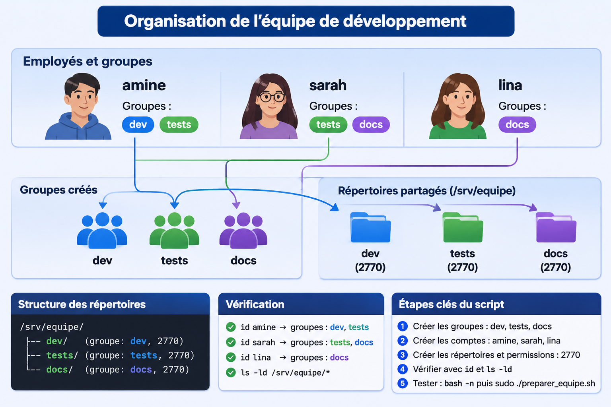

420-E04-UC · Installation et gestion d’ordinateurs
Rédaction correcte de scripts sous Linux
Support de cours Bash : concepts, exemples commentés et deux exercices d’application après chaque section.
10 sections · 20 exercices
Objectifs pédagogiques
Créer, exécuter, documenter et tester des scripts Bash fiables afin d’automatiser des opérations courantes d’administration Linux. Les manipulations doivent être réalisées sur une machine virtuelle ou dans un environnement de test.
Prérequis : navigation dans le terminal, commandes de base et permissions Linux. Conseil : tester les exemples dans un dossier de travail avant toute adaptation sur un système de production.
011. Introduction aux scripts Shell
Qu’est-ce qu’un script ?
Un script Shell est un fichier texte contenant une suite de commandes exécutées par un interpréteur. Bash est un Shell courant sous Linux. Un script permet de reproduire des opérations sans les ressaisir.
Où créer un fichier script Bash ?
Un script est un fichier texte ordinaire : vous pouvez le créer dans votre dossier personnel, sans droits administrateur. Pour ce cours, utilisez un répertoire dédié ~/scripts afin de regrouper vos travaux. Évitez de commencer dans /etc, /usr/bin ou d'autres dossiers système.
Exemple : si votre compte s'appelle etudiant, le dossier ~/scripts correspond à /home/etudiant/scripts.
Étape 1 — Préparer le dossier de travail
Commandes à saisir dans le terminal
cd ~
mkdir -p scripts
cd scripts
pwd
cd ~ revient au dossier personnel ; mkdir -p scripts crée le dossier s'il n'existe pas ; cd scripts permet d'y entrer ; pwd vérifie votre emplacement.
Étape 2 — Créer et ouvrir le fichier
Utilisez l'éditeur de texte nano pour créer un fichier nommé premier_script.sh. S'il n'existe pas encore, nano le créera lors de l'enregistrement.
Ouvrir le fichier avec nano
nano premier_script.sh
Étape 3 — Écrire et enregistrer le script
Dans nano, saisissez le contenu suivant. La première ligne indique l'interpréteur Bash ; les lignes suivantes sont des commandes Linux que vous connaissez déjà.
Contenu du fichier premier_script.sh
#!/usr/bin/env bash
# Mon premier script Linux
whoami
pwd
date
Pour enregistrer dans nano : appuyez sur Ctrl + O, puis sur Entrée pour confirmer le nom du fichier. Quittez ensuite avec Ctrl + X.
Étape 4 — Vérifier et exécuter le fichier
Vérification et première exécution
ls -l premier_script.sh
cat premier_script.sh
bash premier_script.sh
ls -l confirme la présence du fichier, cat affiche son contenu et bash premier_script.sh l'exécute. À ce stade, il n'est pas nécessaire d'ajouter la permission d'exécution : elle sera expliquée dans la section suivante.
À retenir : un script Bash peut être créé dans n'importe quel dossier où vous avez le droit d'écrire. L'extension .sh est une convention utile, mais elle n'est pas obligatoire.
Comprendre la première ligne d’un script : le shebang
Après la définition d’un script, observons cette ligne que l’on place généralement tout au début d’un script Bash :
Exemple Bash
#!/usr/bin/env bash
Cette ligne s’appelle le shebang. Lorsqu’on exécute directement un fichier script, elle indique au système quel interpréteur doit lire et exécuter les commandes du fichier.
#! : marque spéciale qui identifie la ligne comme un shebang.
/usr/bin/env : programme qui recherche bash dans les répertoires définis par la variable d’environnement PATH.
bash : interpréteur Shell qui exécutera les commandes du script.
Pourquoi utiliser cette écriture ? Elle permet de trouver Bash à partir du PATH, plutôt que d’imposer son emplacement exact, comme dans #!/bin/bash. Elle suppose cependant que env se trouve dans /usr/bin/env et que Bash est accessible dans le PATH.
Exemple guidé
#!/usr/bin/env bash
# Afficher l’utilisateur connecté et la date
whoami
date
Enregistrez ces lignes dans informations.sh, puis exécutez :
chmod u+x informations.sh
./informations.sh
À retenir : le shebang est utilisé lors de l’exécution directe avec ./informations.sh. Si vous lancez bash informations.sh, vous choisissez déjà explicitement Bash : le shebang n’est alors pas nécessaire pour sélectionner l’interpréteur.
Pourquoi automatiser ?
Les scripts facilitent les sauvegardes, les vérifications système, la préparation des dossiers et la production de rapports. Ils réduisent les tâches répétitives, mais doivent être testés avant une utilisation réelle.
Exemple pratique
whoami
pwd
date
Exercices d’application
Exercice 1.1 — Observation
Exécutez séparément whoami, pwd et date. Expliquez le rôle de chaque commande et indiquez laquelle pourrait servir dans un rapport système.
Exercice 1.2 — Analyse
Une équipe vérifie chaque matin la date, le nom de l’utilisateur et le dossier courant. Proposez l’ordre des commandes à placer dans un script et justifiez l’intérêt de cette automatisation.
022. Création et exécution d’un script Bash
Le fichier et le shebang
Un script Bash peut porter l’extension .sh (facultative). La première ligne #!/usr/bin/env bash indique l’interpréteur à utiliser lors d’une exécution directe.
Exécution et permissions
bash script.sh lance le fichier avec Bash sans nécessiter le droit d’exécution. chmod u+x script.sh puis ./script.sh permettent son exécution directe. Les commentaires commencent par #.
Exemple pratique
Exemple Bash
#!/usr/bin/env bash
# Premier script : informations de base
echo "Bonjour depuis Linux"
date
# Exécution : bash premier.sh
Exercices d’application
Exercice 2.1 — préparer les comptes d’une équipe informatique
Contexte : dans une machine virtuelle Linux de laboratoire, une entreprise accueille trois employés : amine (développement), sarah (tests) et lina (documentation). Les groupes dev, tests et docs doivent être créés. Amine appartient à dev et tests ; Sarah à tests et docs ; Lina à docs.
Créez le dossier ~/scripts, puis le fichier preparer_equipe.sh avec nano. Ajoutez le shebang et des commentaires qui décrivent chaque étape.
Écrivez les commandes permettant de créer les trois groupes, les trois comptes avec leurs dossiers personnels, puis de leur attribuer les groupes secondaires demandés. Pour un premier essai, utilisez des noms explicites directement dans les commandes.
Créez les répertoires /srv/equipe/dev, /srv/equipe/tests et /srv/equipe/docs. Attribuez à chacun le groupe correspondant et les permissions 2770 (accès au propriétaire et au groupe, aucun accès aux autres ; bit setgid pour hériter du groupe).
Vérifiez les comptes, leurs groupes et les permissions avec id et ls -ld. Expliquez pourquoi chmod 2770 convient à un espace collaboratif privé.
Exécutez d’abord une vérification syntaxique avec bash -n preparer_equipe.sh, puis lancez le script avec les privilèges administrateur nécessaires, uniquement sur la machine virtuelle de test.
Livrables : fichier preparer_equipe.sh, commandes de vérification et capture des permissions finales. Question : que se passe-t-il si vous exécutez le même script une seconde fois ?

Figure — Organisation des utilisateurs, des groupes et des répertoires partagés de l’exercice 2.1.
Exercice 2.2 — déployer une organisation multiéquipes avec des accès différenciés
Contexte : une organisation possède trois services : support, reseau et audit. Les comptes nora (support), yassine (réseau) et maya (audit) sont membres de leur groupe principal ; maya doit également appartenir aux groupes support et reseau afin de consulter les ressources des deux équipes.
Créez deployer_services.sh dans ~/scripts avec un shebang, un en-tête descriptif et des commentaires. Prévoyez les commandes de création des groupes et des comptes, puis leurs affiliations avec usermod -aG sans supprimer les groupes secondaires existants.
Créez /srv/services/support, /srv/services/reseau et /srv/services/audit. Associez à chaque répertoire le groupe correspondant.
Appliquez des droits différents : 2770 pour support et reseau (travail collaboratif réservé au groupe), et 2750 pour audit (lecture et parcours pour le groupe, écriture réservée au propriétaire). Expliquez chaque chiffre et le bit setgid.
Pour permettre à Maya de consulter sans modifier les fichiers des équipes support et réseau, étudiez et appliquez des ACL avec setfacl sur les répertoires concernés, puis contrôlez le résultat avec getfacl. Précisez comment les ACL par défaut influencent les nouveaux fichiers et leurs limites.
Vérifiez les appartenances avec id, les permissions avec ls -ld et les ACL avec getfacl. Documentez les tests d’accès autorisé et refusé à réaliser avec les différents comptes.
Vérifiez la syntaxe du script avec bash -n, rendez-le exécutable avec chmod u+x, puis expliquez la différence entre sudo bash deployer_services.sh et sudo ./deployer_services.sh.
Précautions : travaillez uniquement sur une VM dédiée, avec des comptes fictifs. Les commandes de création de comptes nécessitent des privilèges élevés. L’appartenance de Maya aux groupes support et reseau lui donnerait les droits d’écriture accordés à ces groupes par 2770 : pour imposer réellement une lecture seule, proposez une correction de la stratégie d’appartenance (par exemple retirer Maya de ces deux groupes et accorder seulement des ACL de lecture et de parcours). Justifiez cette correction avant vos tests.
Livrables : script documenté, tableau des comptes/groupes/permissions, résultats de vérification et justification de la stratégie d’accès. Défi : proposez une méthode pour éviter les erreurs lors d’une deuxième exécution du script.
033. Variables et interaction avec l’utilisateur
Variables
Une affectation ne contient pas d’espaces autour de = : dossier="/tmp". Utilisez "$dossier" pour éviter le découpage des valeurs contenant des espaces.
Entrées et arguments
read -r -p demande une saisie. Les paramètres $1 et $2 désignent les premiers arguments, $# leur nombre, "$@" l’ensemble des arguments. Le code de retour d’une commande est accessible via $?.
Écrivez un script qui demande un nom de machine et affiche « Machine à vérifier : NOM ». Testez avec un nom contenant un espace.
Exercice 3.2 — Arguments
Écrivez un script rapport.sh qui affiche le nombre d’arguments reçus et le premier argument, ou « non fourni » si celui-ci est absent. Testez avec zéro, un et deux arguments.
044. Opérateurs et structures conditionnelles
Tests et comparaisons
[[ -f "$chemin" ]] vérifie un fichier ordinaire ; -d un répertoire ; -e une entrée existante. Pour les nombres, utilisez -eq, -ne, -lt, -le, -gt et -ge. Pour les chaînes, == et !=.
Branches
if ...; then ... elif ...; then ... else ... fi choisit une action. case ... in ... esac convient à plusieurs choix distincts.
Exemple pratique
Exemple Bash
#!/usr/bin/env bash
read -r -p "Chemin à vérifier : " chemin
if [[ -f "$chemin" ]]; then
echo "Fichier ordinaire"
elif [[ -d "$chemin" ]]; then
echo "Répertoire"
else
echo "Chemin absent ou autre type"
fi
Exercices d’application
Exercice 4.1 — Conditions
Écrivez un script qui demande un chemin et affiche s’il correspond à un fichier, à un dossier ou à une autre situation.
Exercice 4.2 — Choix
Écrivez un script qui lit un choix (1 : date, 2 : utilisateur, 3 : répertoire courant) et utilise case pour exécuter la commande correspondante ; prévoyez un message pour tout autre choix.
055. Structures répétitives
Boucles
for parcourt une liste ; while répète tant qu’une condition est vraie ; until répète tant qu’elle est fausse. break interrompt une boucle et continue passe à l’itération suivante.
Précautions
Utilisez des conditions d’arrêt explicites. Pour parcourir des noms de fichiers, privilégiez les expansions de chemins correctement citées plutôt que le découpage de la sortie de ls.
Exemple pratique
Exemple Bash
#!/usr/bin/env bash
for fichier in "$HOME"/*.txt; do
[[ -e "$fichier" ]] || continue
printf "Fichier : %s\n" "$fichier"
done
compteur=1
while (( compteur <= 3 )); do
echo "Vérification $compteur"
((compteur++))
done
Exercices d’application
Exercice 5.1 — Répétition
Écrivez un script qui affiche les nombres de 1 à 10 à l’aide d’une boucle while.
Exercice 5.2 — Parcours
Écrivez un script qui parcourt les fichiers .log d’un répertoire donné en argument et affiche leurs noms. Gérez le cas où aucun fichier .log n’est présent.
066. Manipulation des fichiers et répertoires
Commandes utiles
mkdir -p crée une arborescence, cp copie, mv déplace, find recherche et grep filtre des lignes. Les redirections > et >> écrivent ou ajoutent du contenu ; | transmet la sortie d’une commande à une autre.
Sécurité
Citez systématiquement les variables contenant des chemins. Vérifiez les sources avant une copie. Évitez les suppressions destructrices dans les premiers exercices et travaillez dans un répertoire de test.
Exemple pratique
Exemple Bash
#!/usr/bin/env bash
source_dir="$HOME/Documents"
destination="$HOME/sauvegardes/documents"
if [[ ! -d "$source_dir" ]]; then
echo "Source introuvable" >&2
exit 1
fi
mkdir -p "$destination" || exit 1
cp -a "$source_dir"/. "$destination"/ || exit 1
echo "Copie terminée"
Exercices d’application
Exercice 6.1 — Arborescence
Créez un script qui construit dans un dossier de test les sous-dossiers documents, journaux et sauvegardes, puis affiche leur arborescence avec find.
Exercice 6.2 — Sauvegarde
Écrivez un script qui reçoit un répertoire source et un répertoire de destination en arguments, vérifie la source et copie son contenu. Testez uniquement avec des fichiers fictifs.
077. Bonnes pratiques de rédaction
Lisibilité
Choisissez des noms explicites (repertoire_source), une indentation régulière et des commentaires décrivant l’intention. Séparez la configuration, les vérifications et les actions.
Robustesse
Placez les expansions de chemins entre guillemets, validez les arguments et utilisez des fonctions pour les actions réutilisables. Préférez printf pour un affichage prévisible.
Réécrivez ce code pour le rendre lisible et sûr : d=$1; mkdir $d; echo fait. Ajoutez la vérification du nombre d’arguments et les guillemets nécessaires.
Exercice 7.2 — Relecture
Un collègue a écrit un script sans commentaires, avec les variables a et b et plusieurs blocs répétés. Proposez quatre améliorations concrètes et appliquez-en deux dans un court script.
088. Gestion des erreurs et débogage
Codes de sortie
Une commande réussie renvoie généralement 0. Les autres codes indiquent un échec ou une situation particulière. Testez directement les commandes avec if commande; then plutôt que de dépendre tardivement de $?.
Outils
bash -n script.sh vérifie la syntaxe sans exécuter le script. bash -x script.sh affiche les étapes d’exécution : attention, cela peut exposer des données sensibles. Les messages d’erreur peuvent être envoyés vers stderr avec >&2.
Exemple pratique
Exemple Bash
#!/usr/bin/env bash
if ! mkdir -p "$HOME/test-scripts/journaux"; then
echo "Impossible de créer le répertoire" >&2
exit 1
fi
echo "Répertoire prêt"
# Diagnostic : bash -n script.sh ; bash -x script.sh
Exercices d’application
Exercice 8.1 — Débogage
Corrigez ce script puis vérifiez-le avec bash -n : if [[ -d "$HOME" ]]; then echo "OK" (il manque une instruction de fermeture).
Exercice 8.2 — Gestion d’échec
Écrivez un script qui tente de lire un fichier donné en argument. Si le fichier est absent ou illisible, affichez un message sur la sortie d’erreur et quittez avec un code non nul.
099. Automatisation des tâches d’administration Linux
Surveillance
df -h indique l’espace disponible sur les systèmes de fichiers ; du -sh mesure un répertoire ; free -h résume la mémoire ; ps affiche les processus. systemctl permet de consulter les services sur les systèmes utilisant systemd.
Rapports et planification
Un rapport peut regrouper date, nom d’hôte et indicateurs système. cron planifie des tâches selon une expression temporelle ; il faut employer des chemins explicites et rediriger les journaux.
Créez un script qui génère un rapport daté contenant le nom d’hôte, l’espace disque et la mémoire. Enregistrez le résultat dans un fichier de votre dossier personnel.
Exercice 9.2 — Surveillance
Créez un script qui lit le pourcentage d’utilisation de la partition / à partir de df et affiche une alerte si le seuil de 80 % est atteint. Expliquez comment tester la condition sans remplir réellement le disque.
1010. Travaux pratiques intégrateurs
Méthode de réalisation
Pour chaque mini-projet : analyser le besoin, définir les entrées, écrire les vérifications, coder les actions, tester plusieurs scénarios, puis documenter l’utilisation.
Critères de qualité
Le script doit fonctionner dans un environnement de test, traiter les chemins contenant des espaces, signaler les erreurs, respecter une structure claire et produire une sortie compréhensible.
Exemple pratique
Exemple Bash
#!/usr/bin/env bash
# Squelette d’un mini-projet
# 1. Valider les arguments
# 2. Vérifier les ressources
# 3. Exécuter les opérations
# 4. Produire un bilan
# 5. Renvoyer un code de sortie adapté
Exercices d’application
Exercice 10.1 — Mini-projet A : sauvegarde
Développez un script de sauvegarde paramétrable : source, destination, validation, création du dossier cible, copie et bilan. Fournissez trois tests, dont un cas d’erreur.
Exercice 10.2 — Mini-projet B : diagnostic
Développez un script de diagnostic Linux regroupant date, hôte, disque, mémoire et état d’un service choisi. Écrivez un rapport et expliquez comment vous vérifiez son exactitude.